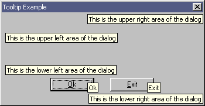

|
Tutorial 27 : Tooltip Control
format PE GUI 4.0
entry start
include '%fasminc%\win32a.inc'
section '.data' data readable writeable
wndH dd ?
insH dd ?
wndClsName db 'TUT_27',0
wndTitle db 'Tutorial 27',0
wndCls WNDCLASS
wndMsg MSG
tipsH dd ?
ctlClsNameTips db 'Tooltips_class32',0
tipsTxt1 db 'This is the upper left area of the dialog',0
tipsTxt2 db 'This is the upper right area of the dialog',0
tipsTxt3 db 'This is the lower left area of the dialog',0
tipsTxt4 db 'This is the lower right area of the dialog',0
ti TOOLINFO
id dd ?
rect RECT
buffer rb 0xFF
section '.code' code readable executable
start:
invoke GetModuleHandle,0
mov [insH],eax
invoke DialogBoxParam,eax,101,NULL,dialog_procedure,NULL
invoke ExitProcess,0
proc dialog_procedure,hDlg,uMsg,wParam,lParam
push ebx esi edi
cmp [uMsg],WM_INITDIALOG
je wmINITDIALOG
cmp [uMsg],WM_CLOSE
je wmCLOSE
pop edi esi ebx
mov eax,FALSE
return
wmCLOSE:
invoke EndDialog,[hDlg],NULL
jmp wmBYE
wmINITDIALOG:
invoke InitCommonControls
invoke CreateWindowEx,NULL,ctlClsNameTips,NULL,\
TTS_ALWAYSTIP,\
CW_USEDEFAULT,CW_USEDEFAULT,CW_USEDEFAULT,CW_USEDEFAULT,\
NULL,NULL,[insH],NULL
mov [tipsH],eax
mov [id],0
mov [ti.cbSize],sizeof.TOOLINFO
mov [ti.uFlags],TTF_SUBCLASS
push [hDlg]
pop [ti.hwnd]
invoke GetWindowRect,[hDlg],rect
stdcall SetDlgToolArea,[hDlg],ti,tipsTxt1,[id],rect
inc [id]
stdcall SetDlgToolArea,[hDlg],ti,tipsTxt2,[id],rect
inc [id]
stdcall SetDlgToolArea,[hDlg],ti,tipsTxt3,[id],rect
inc [id]
stdcall SetDlgToolArea,[hDlg],ti,tipsTxt4,[id],rect
invoke EnumChildWindows,[hDlg],EnumChild,ti
jmp wmBYE
wmBYE:
pop edi esi ebx
mov eax,TRUE
return
endp
proc EnumChild,hwnd,lParam
push edi
mov edi,[lParam]
push [hwnd]
pop [edi + TOOLINFO.uId]
or [edi + TOOLINFO.uFlags],TTF_IDISHWND
invoke GetWindowText,[hwnd],buffer,0xFF
mov [edi + TOOLINFO.lpszText],buffer
invoke SendMessage,[tipsH],TTM_ADDTOOL,NULL,edi
pop edi
return
endp
proc SetDlgToolArea,hDlg,lpti,lpText,id,lprect
push edi esi
mov edi,[lpti]
mov esi,[lprect]
cmp [id],0
je id_0
cmp [id],1
je id_1
cmp [id],2
je id_2
cmp [id],3
je id_3
jmp id_exit
id_0:
mov [edi + TOOLINFO.rect.left],0
mov [edi + TOOLINFO.rect.top],0
mov eax,[esi + RECT.right]
sub eax,[esi + RECT.left]
shr eax,1
mov [edi + TOOLINFO.rect.right],eax
mov eax,[esi + RECT.bottom]
sub eax,[esi + RECT.top]
shr eax,1
mov [edi + TOOLINFO.rect.bottom],eax
jmp id_exit
id_1:
mov eax,[esi + RECT.right]
sub eax,[esi + RECT.left]
shr eax,1
inc eax
mov [edi + TOOLINFO.rect.left],eax
mov [edi + TOOLINFO.rect.top],0
mov eax,[esi + RECT.right]
sub eax,[esi + RECT.left]
mov [edi + TOOLINFO.rect.right],eax
mov eax,[esi + RECT.bottom]
sub eax,[esi + RECT.top]
mov [edi + TOOLINFO.rect.bottom],eax
jmp id_exit
id_2:
mov [edi + TOOLINFO.rect.left],0
mov eax,[esi + RECT.bottom]
sub eax,[esi + RECT.top]
shr eax,1
inc eax
mov [edi + TOOLINFO.rect.top],eax
mov eax,[esi + RECT.right]
sub eax,[esi + RECT.left]
shr eax,1
mov [edi + TOOLINFO.rect.right],eax
mov eax,[esi + RECT.bottom]
sub eax,[esi + RECT.top]
mov [edi + TOOLINFO.rect.bottom],eax
jmp id_exit
id_3:
mov eax,[esi + RECT.right]
sub eax,[esi + RECT.left]
shr eax,1
inc eax
mov [edi + TOOLINFO.rect.left],eax
mov eax,[esi + RECT.bottom]
sub eax,[esi + RECT.top]
shr eax,1
inc eax
mov [edi + TOOLINFO.rect.top],eax
mov eax,[esi + RECT.right]
sub eax,[esi + RECT.left]
mov [edi + TOOLINFO.rect.right],eax
mov eax,[esi + RECT.bottom]
sub eax,[esi + RECT.top]
mov [edi + TOOLINFO.rect.bottom],eax
jmp id_exit
id_exit:
push [lpText]
pop [edi + TOOLINFO.lpszText]
invoke SendMessage,[tipsH],TTM_ADDTOOL,NULL,[lpti]
pop esi edi
return
endp
section '.idata' import data readable
library KERNEL32, 'KERNEL32.DLL',\
USER32, 'USER32.DLL',\
COMCTL32, 'COMCTL32.DLL'
import KERNEL32,\
GetModuleHandle, 'GetModuleHandleA',\
ExitProcess, 'ExitProcess'
import USER32,\
RegisterClass, 'RegisterClassA',\
CreateWindowEx, 'CreateWindowExA',\
DialogBoxParam, 'DialogBoxParamA',\
EndDialog, 'EndDialog',\
GetWindowRect, 'GetWindowRect',\
EnumChildWindows, 'EnumChildWindows',\
GetWindowText, 'GetWindowTextA',\
SendMessage, 'SendMessageA'
import COMCTL32,\
InitCommonControls, 'InitCommonControls'
section '.rsrc' resource data readable
directory RT_DIALOG,appDialog
resource appDialog,\
101,LANG_NEUTRAL,dlgMain
dialog dlgMain,'Tooltip Example',0,0,229,96,\
WS_CAPTION + WS_POPUP + WS_SYSMENU + DS_MODALFRAME
dialogitem 'BUTTON','&Ok',1000,55,68,50,14,BS_PUSHBUTTON + WS_VISIBLE + WS_TABSTOP
dialogitem 'BUTTON','&Exit',1001,123,68,50,14,BS_PUSHBUTTON + WS_VISIBLE + WS_TABSTOP
enddialog
Result :

|